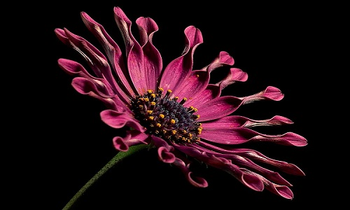
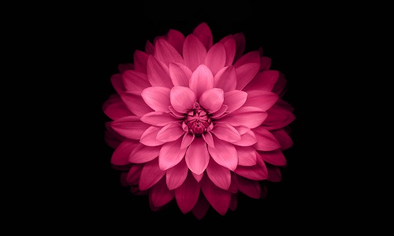
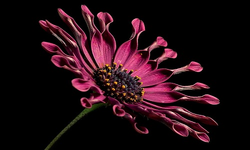
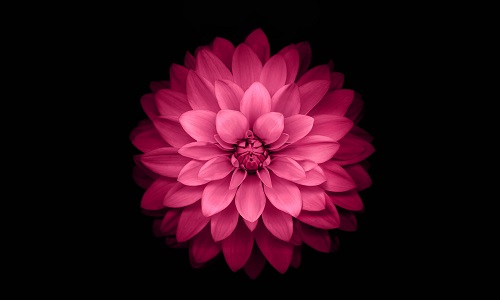
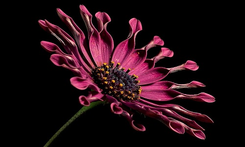
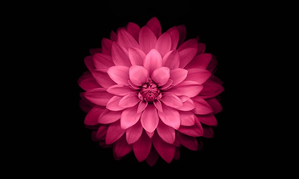

A flower, sometimes known as a bloom or blossom, is the reproductive structure found in flowering plants (plants of the division Magnoliophyta, also called angiosperms).
The biological function of a flower is to effect reproduction, usually by providing a mechanism for the union of sperm with eggs. Flowers may facilitate outcrossing (fusion of sperm and eggs from different individuals in a population) or allow selfing (fusion of sperm and egg from the same flower). Some flowers produce diaspores without fertilization (parthenocarpy). Flowers contain sporangia and are the site where gametophytes develop. Many flowers have evolved to be attractive to animals, so as to cause them to be vectors for the transfer of pollen. After fertilization, the ovary of the flower develops into fruit containing seeds.
In addition to facilitating the reproduction of flowering plants, flowers have long been admired and used by humans to bring beauty to their environment, and also as objects of romance, ritual, religion, medicine and as a source of food.


The biological function of a flower is to effect reproduction, usually by providing a mechanism for the union of sperm with eggs. Flowers may facilitate outcrossing (fusion of sperm and eggs from different individuals in a population) or allow selfing (fusion of sperm and egg from the same flower). Some flowers produce diaspores without fertilization (parthenocarpy). Flowers contain sporangia and are the site where gametophytes develop. Many flowers have evolved to be attractive to animals, so as to cause them to be vectors for the transfer of pollen. After fertilization, the ovary of the flower develops into fruit containing seeds.
In addition to facilitating the reproduction of flowering plants, flowers have long been admired and used by humans to bring beauty to their environment, and also as objects of romance, ritual, religion, medicine and as a source of food.



